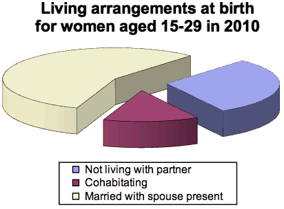
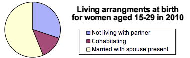

Chartjunk
As with bar charts, pie charts are often graphical representations of a small
number of values. For example, a pie chart of the gender of students in a class
is only based on a single value, the proportion of males. As a result, there is
a temptation to 'enhance' pie charts as 3-dimensional objects — chartjunk.
Resist the temptation — it does not make the data any easier to understand
and may indeed be misleading since 3-dimensional pie charts can over-emphasise
the categories closest to the viewer.
Kestrel deaths
The 3-dimensional pie chart below shows causes of death of kestrels in Britain
between 1963 and 1997.
The viewpoint tends to make the closest categories appear too large. In particular,
Disease incorrectly appears to be as common a cause of death as Unknown.
(There were 77 deaths caused by Disease and 114 of Unknown cause.)
Small is beautiful
In general, it is better to draw a standard pie chart smaller rather than embellishing
it with chartjunk.
Births and partners
The 'exploded' pie chart below describes whether American women aged 15-39 were living with their husband, a partner or were not cohabitating when they had children in 2010. The data were collected in the 2010 Current Population Survey in the USA.

The simpler small pie chart below shows the data more clearly.
